# This stuff only actually gets used in this cell:
from matplotlib import pyplot as plt
# Use the style file defined in the repository route
plt.style.use('../../paper.mplstyle')
# This is the folder where results plots will be saved:
paper_plots_dir = '../../paper/images/zero_latency_results'
# The common and plotting utils modules are in the parent
# `search` directory
# Here we add the `search` directory to the python path so we can
# do a local import
import sys
import os
parent_dir = os.path.abspath("..")
if parent_dir not in sys.path:
sys.path.insert(0, parent_dir)
# Everything plotted in this notebook is done using these helper modules
import plotting_utils
from common_utils import get_results_zero_latency as get_results
/Users/gareth/miniconda3/envs/env_lisa_premerger_sangria/lib/python3.11/site-packages/pycbc/types/array.py:36: UserWarning: Wswiglal-redir-stdio:
SWIGLAL standard output/error redirection is enabled in IPython.
This may lead to performance penalties. To disable locally, use:
with lal.no_swig_redirect_standard_output_error():
...
To disable globally, use:
lal.swig_redirect_standard_output_error(False)
Note however that this will likely lead to error messages from
LAL functions being either misdirected or lost when called from
Jupyter notebooks.
To suppress this warning, use:
import warnings
warnings.filterwarnings("ignore", "Wswiglal-redir-stdio")
import lal
import lal as _lal
times_before = [0.5, 1, 4, 7, 14]
results_model_raw = get_results(
"results/psd_model/data_runs_raw_{time_before}_results.hdf",
times_before
)
results_model_remove = get_results(
"results/psd_model/data_runs_remove_{time_before}_results.hdf",
times_before
)
results_estimate_raw = get_results(
"results/psd_estimate/data_runs_raw_{time_before}_results.hdf",
times_before
)
results_estimate_remove = get_results(
"results/psd_estimate/data_runs_remove_{time_before}_results.hdf",
times_before
)
# Get the truth times
import ldc.io.hdf5 as hdfio
input_data = '../../datasets/LDC2_sangria_hm_training.hdf'
mbhb_sky, _ = hdfio.load_array(input_data, name="sky/mbhb/cat")
truth_times_s = mbhb_sky['CoalescenceTime']
fig_model_all, _ = plotting_utils.plot_around_time(
results_one=results_model_raw,
truth_times=truth_times_s,
times_before=times_before,
width_factor=1.5,
label_one='Search results',
legend_loc='upper right'
)
fig_model_all.savefig(f'plots/psd_model_all_raw.pdf')
---------------------------------------------------------------------------
FileNotFoundError Traceback (most recent call last)
Cell In[4], line 9
1 fig_model_all, _ = plotting_utils.plot_around_time(
2 results_one=results_model_raw,
3 truth_times=truth_times_s,
(...) 7 legend_loc='upper right'
8 )
----> 9 fig_model_all.savefig(f'plots/psd_model_all_raw.pdf')
File ~/miniconda3/envs/env_lisa_premerger_sangria/lib/python3.11/site-packages/matplotlib/figure.py:3490, in Figure.savefig(self, fname, transparent, **kwargs)
3488 for ax in self.axes:
3489 _recursively_make_axes_transparent(stack, ax)
-> 3490 self.canvas.print_figure(fname, **kwargs)
File ~/miniconda3/envs/env_lisa_premerger_sangria/lib/python3.11/site-packages/matplotlib/backend_bases.py:2186, in FigureCanvasBase.print_figure(self, filename, dpi, facecolor, edgecolor, orientation, format, bbox_inches, pad_inches, bbox_extra_artists, backend, **kwargs)
2182 try:
2183 # _get_renderer may change the figure dpi (as vector formats
2184 # force the figure dpi to 72), so we need to set it again here.
2185 with cbook._setattr_cm(self.figure, dpi=dpi):
-> 2186 result = print_method(
2187 filename,
2188 facecolor=facecolor,
2189 edgecolor=edgecolor,
2190 orientation=orientation,
2191 bbox_inches_restore=_bbox_inches_restore,
2192 **kwargs)
2193 finally:
2194 if bbox_inches and restore_bbox:
File ~/miniconda3/envs/env_lisa_premerger_sangria/lib/python3.11/site-packages/matplotlib/backend_bases.py:2042, in FigureCanvasBase._switch_canvas_and_return_print_method.<locals>.<lambda>(*args, **kwargs)
2038 optional_kws = { # Passed by print_figure for other renderers.
2039 "dpi", "facecolor", "edgecolor", "orientation",
2040 "bbox_inches_restore"}
2041 skip = optional_kws - {*inspect.signature(meth).parameters}
-> 2042 print_method = functools.wraps(meth)(lambda *args, **kwargs: meth(
2043 *args, **{k: v for k, v in kwargs.items() if k not in skip}))
2044 else: # Let third-parties do as they see fit.
2045 print_method = meth
File ~/miniconda3/envs/env_lisa_premerger_sangria/lib/python3.11/site-packages/matplotlib/backends/backend_pdf.py:2779, in FigureCanvasPdf.print_pdf(self, filename, bbox_inches_restore, metadata)
2777 file = filename._ensure_file()
2778 else:
-> 2779 file = PdfFile(filename, metadata=metadata)
2780 try:
2781 file.newPage(width, height)
File ~/miniconda3/envs/env_lisa_premerger_sangria/lib/python3.11/site-packages/matplotlib/backends/backend_pdf.py:687, in PdfFile.__init__(self, filename, metadata)
685 self.original_file_like = None
686 self.tell_base = 0
--> 687 fh, opened = cbook.to_filehandle(filename, "wb", return_opened=True)
688 if not opened:
689 try:
File ~/miniconda3/envs/env_lisa_premerger_sangria/lib/python3.11/site-packages/matplotlib/cbook.py:546, in to_filehandle(fname, flag, return_opened, encoding)
544 fh = bz2.BZ2File(fname, flag)
545 else:
--> 546 fh = open(fname, flag, encoding=encoding)
547 opened = True
548 elif hasattr(fname, 'seek'):
FileNotFoundError: [Errno 2] No such file or directory: 'plots/psd_model_all_raw.pdf'

fig_model_all, _ = plotting_utils.plot_around_time(
results_one=results_model_remove,
truth_times=truth_times_s,
times_before=times_before,
marker_one='o',
label_one='Search Results (mergers removed)',
width_factor=2,
height_factor=1.25,
legend_loc='upper right'
)
fig_model_all.savefig(f'plots/psd_model_remove.pdf')
fig_model_all.savefig(f'{paper_plots_dir}/figure_6_zerolatency_result.png', dpi=300)
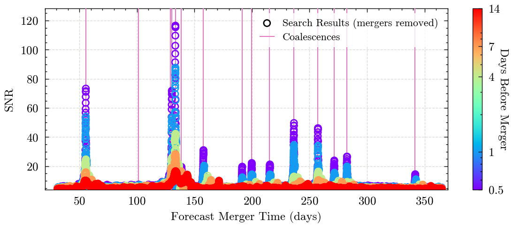
fig_estimate_all, _ = plotting_utils.plot_around_time(
results_one=results_estimate_raw,
results_two=results_estimate_remove,
truth_times=truth_times_s,
times_before=times_before,
width_factor=1.5,
legend_loc='upper right'
)
fig_estimate_all.savefig(f'plots/psd_estimate_all.pdf')
example_signal_number = 10
fig_model, _ = plotting_utils.plot_around_time(
results_one=results_model_raw,
signal_truth_time=truth_times_s[example_signal_number],
truth_times=truth_times_s,
start_time_offset=-15,
end_time_offset=18,
times_before=times_before,
signal_number=example_signal_number,
title='off',
legend_loc='upper right',
label_one='Results'
)
fig_model.show()
fig_model, _ = plotting_utils.plot_around_time(
results_one=results_model_raw,
results_two=results_model_remove,
signal_truth_time=truth_times_s[example_signal_number],
truth_times=truth_times_s,
start_time_offset=-16,
end_time_offset=16,
times_before=times_before,
signal_number=example_signal_number,
title='off',
legend_loc='upper left',
alpha_one=0.3
)
fig_model.show()
fig_model.savefig(f'{paper_plots_dir}/figure_5_signal_{example_signal_number}_removed.pdf')
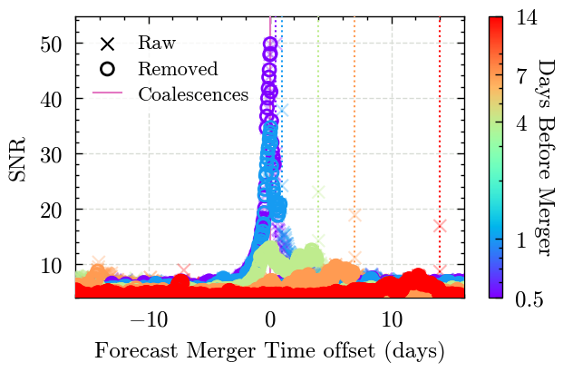
for i, truth_time_s in enumerate(truth_times_s):
fig_model, _ = plotting_utils.plot_around_time(
results_one=results_model_raw,
results_two=results_model_remove,
signal_truth_time=truth_time_s,
truth_times=truth_times_s,
start_time_offset=-20,
end_time_offset=20,
times_before=times_before,
signal_number=i,
legend_loc='upper right' if i in [5,6,9,12,13] else 'upper left',
alpha_one=0.4
)
fig_model.show()
fig_model.savefig(f'plots/psd_model_signal_{i}_forecast.pdf')
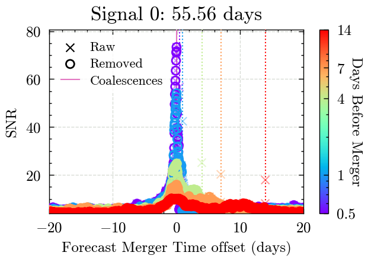
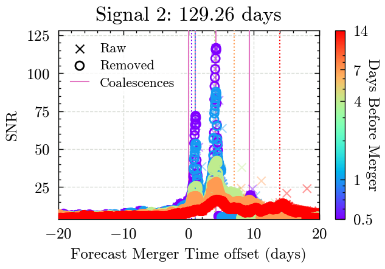
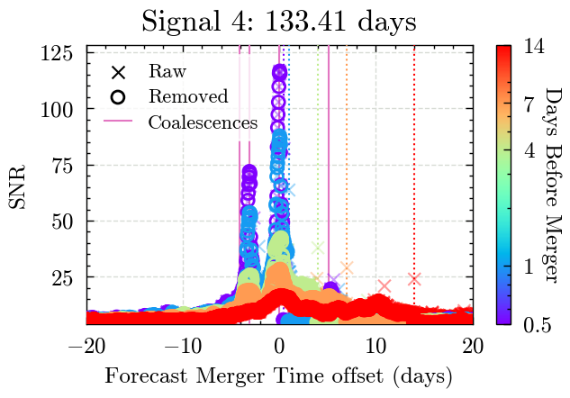
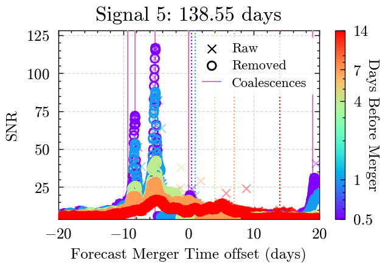
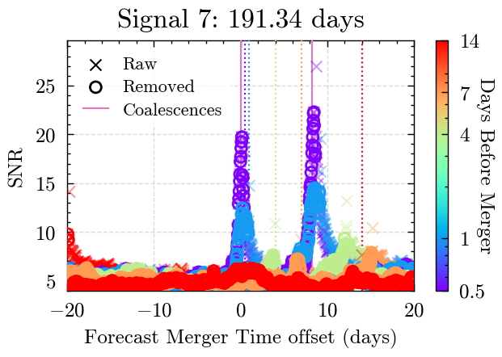
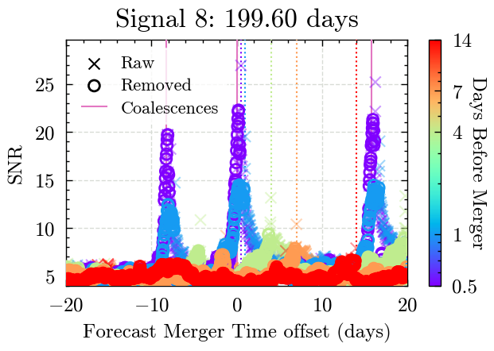
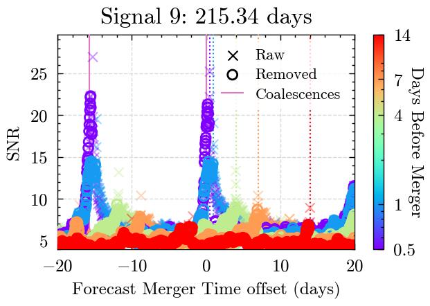
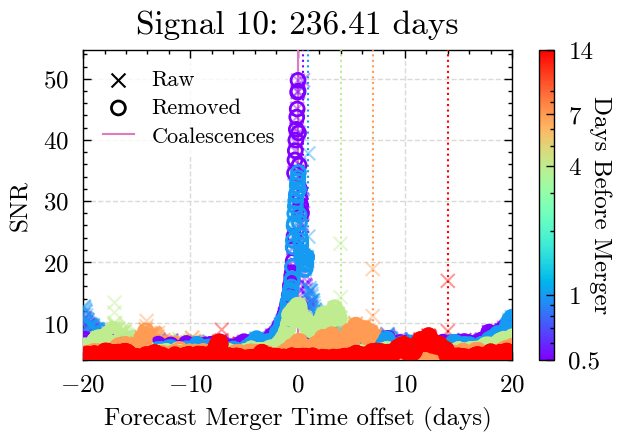
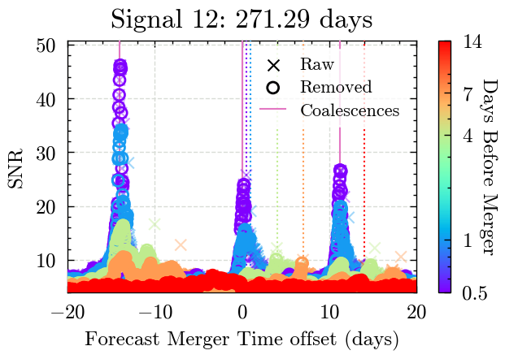
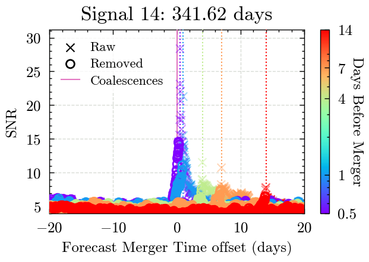
for i, truth_time_s in enumerate(truth_times_s):
fig_model, _ = plotting_utils.plot_around_time(
results_one=results_model_raw,
results_two=results_model_remove,
signal_truth_time=truth_time_s,
truth_times=truth_times_s,
start_time_offset=-20,
end_time_offset=10,
times_before=times_before,
signal_number=i,
predicted_time=False,
legend_loc='upper right' if i in [5,12,13] else 'upper left'
)
fig_model.show()
fig_model.savefig(f'plots/psd_model_signal_{i}_end_time.pdf')
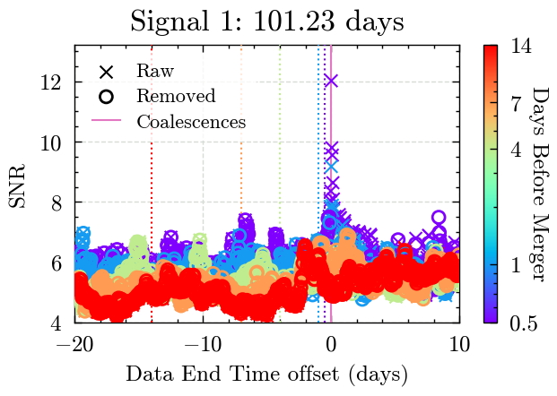
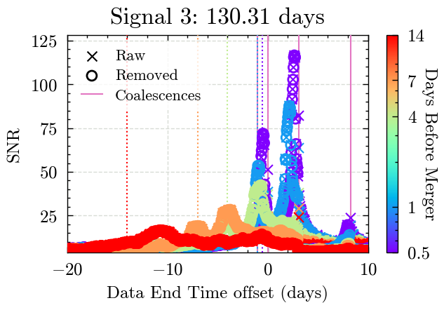
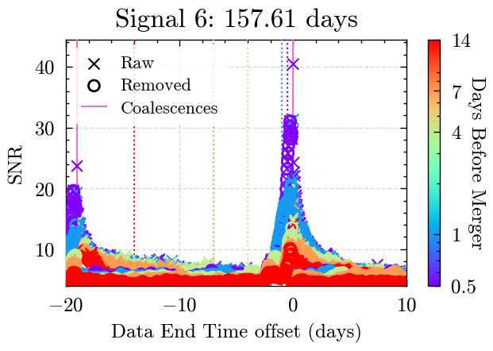
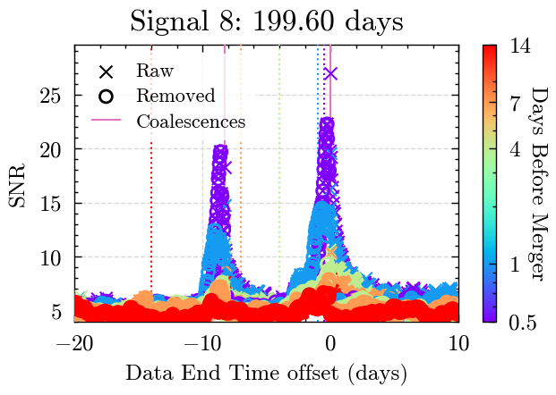
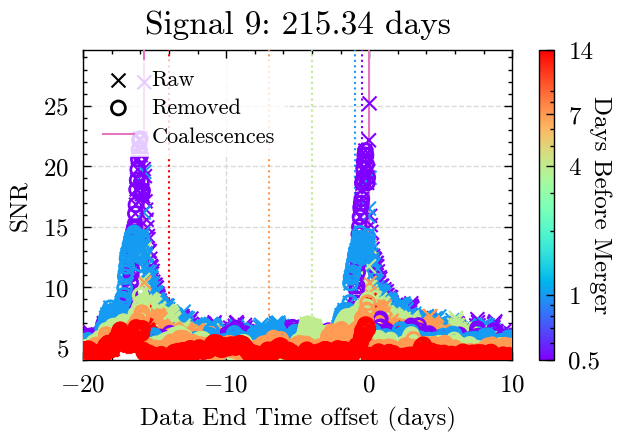
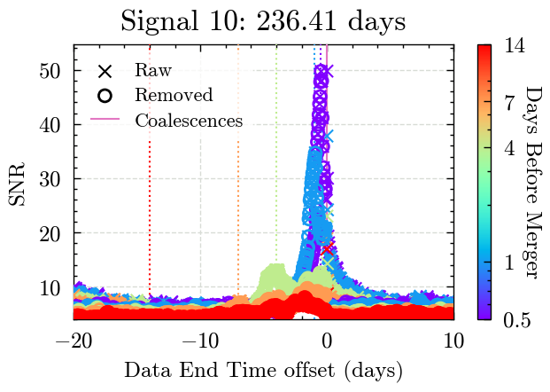
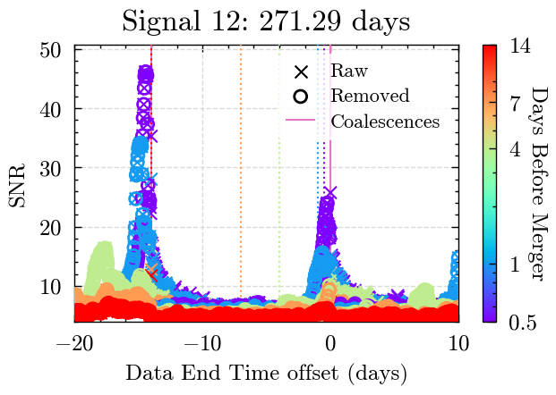
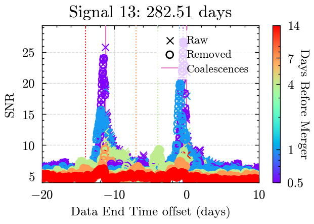
for i, truth_time_s in enumerate(truth_times_s):
fig_estimate, _ = plotting_utils.plot_around_time(
results_one=results_estimate_raw,
results_two=results_estimate_remove,
signal_truth_time=truth_time_s,
truth_times=truth_times_s,
start_time_offset=-10,
end_time_offset=20,
times_before=times_before,
signal_number=i,
legend_loc='upper right'
)
fig_estimate.show()
fig_estimate.savefig(f'plots/psd_estimate_signal_{i}.pdf')
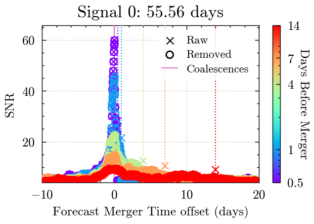
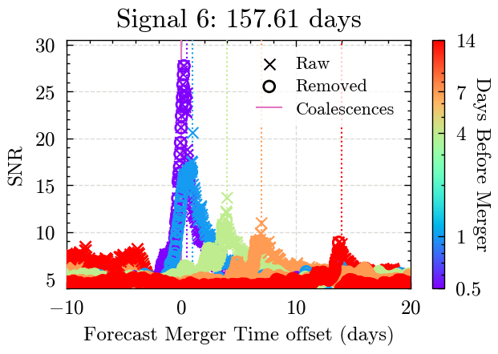
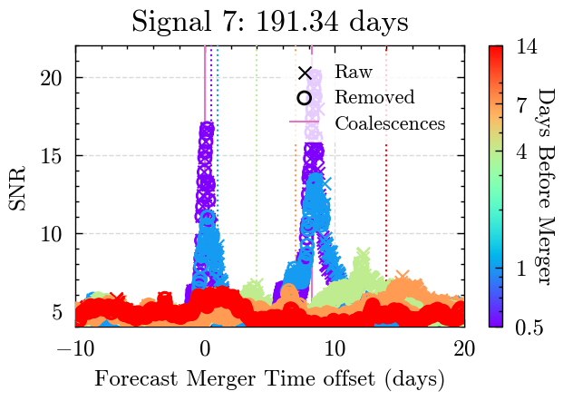
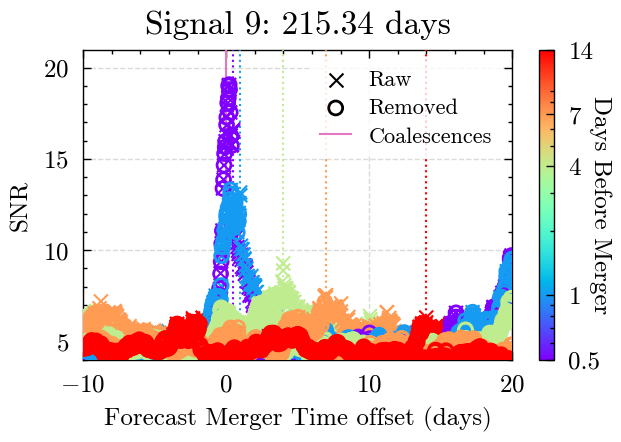
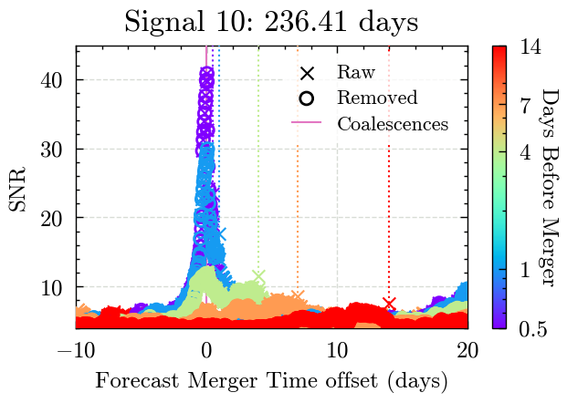
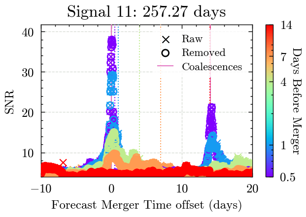
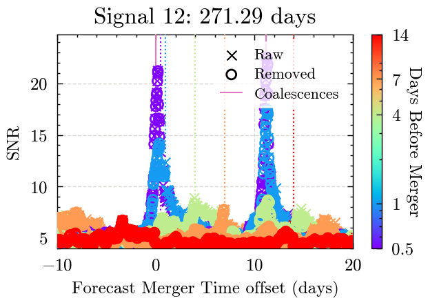
for i, truth_time_s in enumerate(truth_times_s):
if i in [8,11]:
legend_loc = 'upper center'
else:
legend_loc = 'upper right'
fig_psd_comparison, _ = plotting_utils.plot_around_time(
results_one=results_model_remove,
results_two=results_estimate_remove,
signal_truth_time=truth_time_s,
truth_times=truth_times_s,
start_time_offset=-10,
end_time_offset=20,
times_before=times_before,
signal_number=i,
label_one='PSD model',
label_two='PSD estimate',
legend_loc='upper left' if i in [] else 'upper right'
)
fig_psd_comparison.show()
fig_psd_comparison.savefig(f'plots/psd_comparison_signal_{i}.pdf')
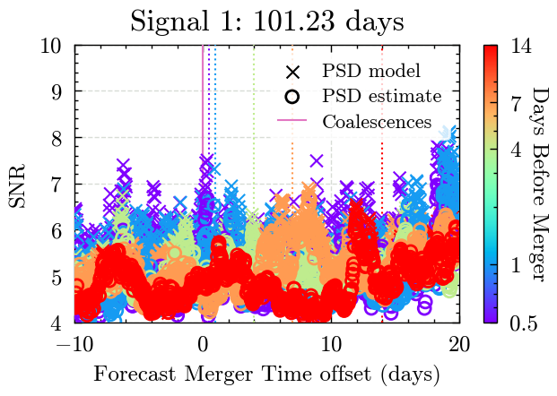
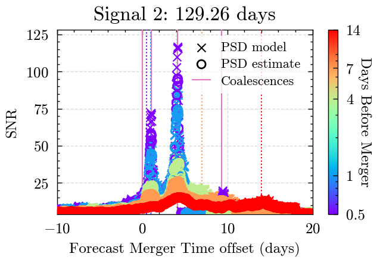
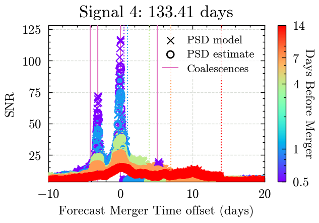
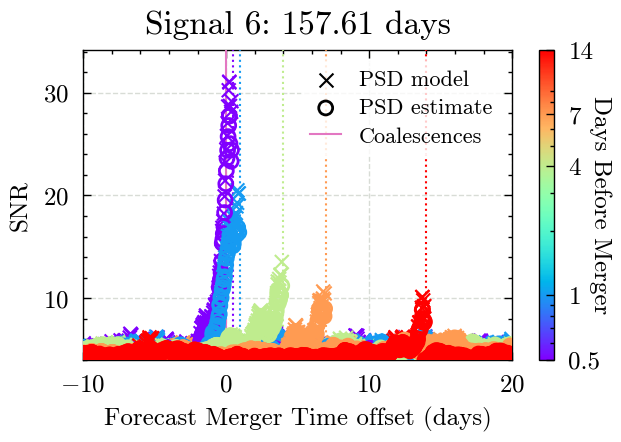
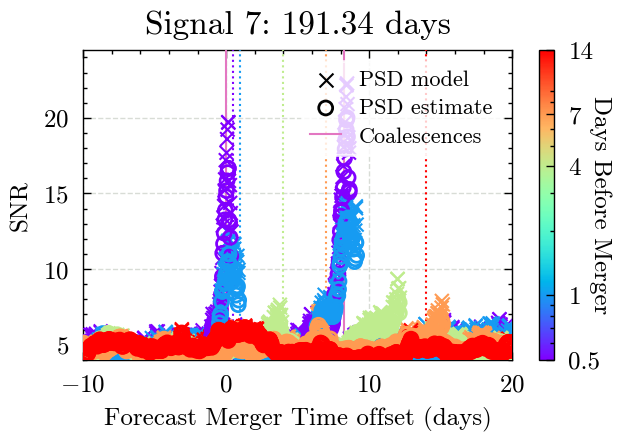
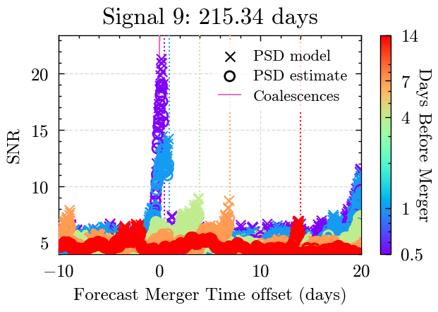
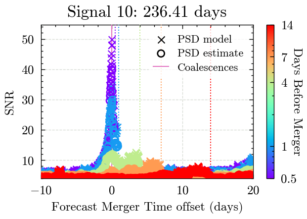